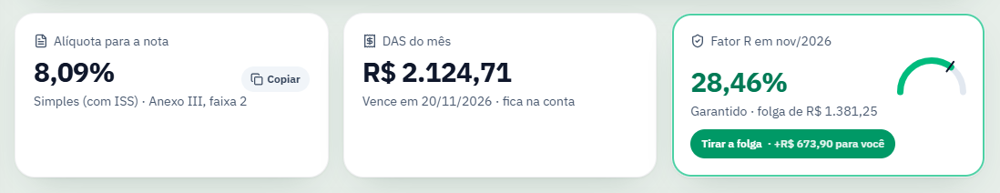
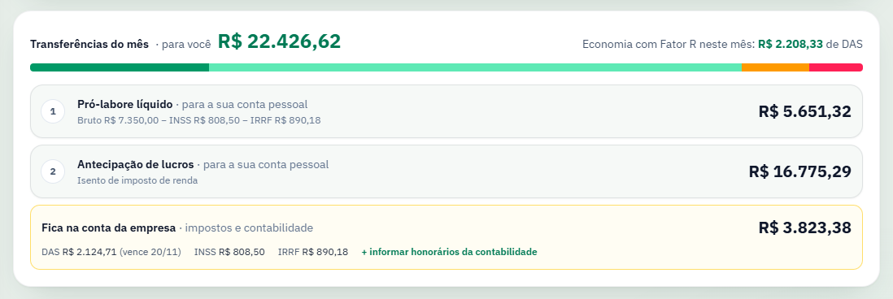
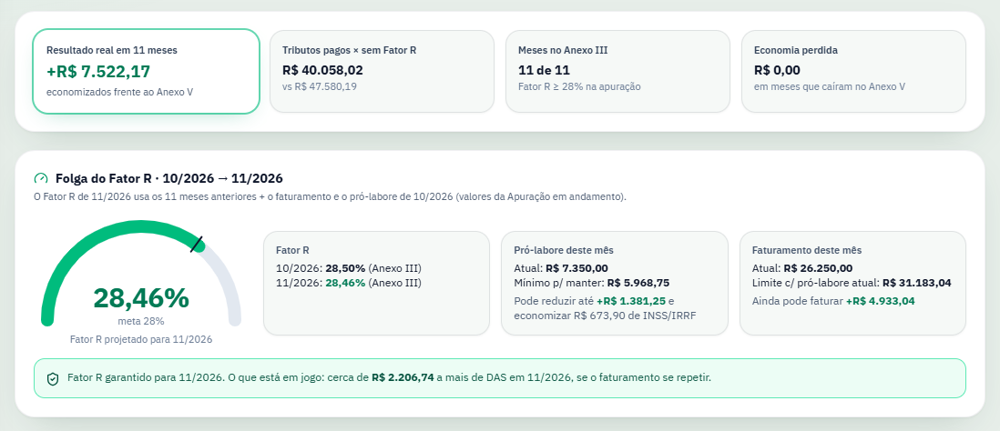
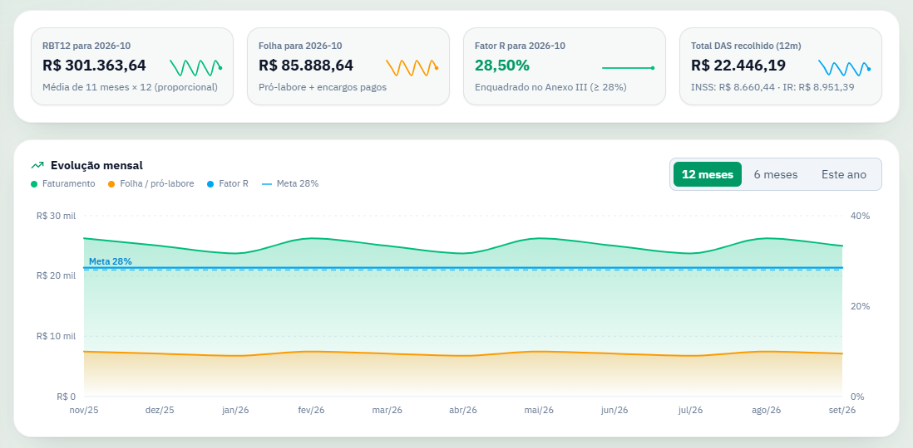

Pague 6% de Simples, não 15,5%
Quem presta serviço fica no Anexo III, o mais barato, enquanto a folha dos últimos 12 meses chegar a 28% da receita. O FatorSimples faz essa conta todo mês e diz a alíquota para a nota, o DAS, o pró-labore no ponto certo e quanto pode ir para a sua conta.
- Windows
- macOS
- Linux
- Código aberto
Três respostas no topo de cada mês
Digite o faturamento e pronto: a alíquota para colocar na nota, o DAS com o vencimento e o Fator R já garantido para o mês seguinte.

Quanto vai para você, e quanto fica na empresa
O faturamento do mês se divide em três partes que somam o valor recebido: o pró-labore líquido, a antecipação de lucros e o que fica para pagar DAS, INSS, IRRF e contabilidade.
- Pró-labore em 28% do mês, sem folga ou manual
- INSS e IRRF com a tabela de cada ano, inclusive a Lei 15.270/2025
- Memória de cálculo completa para conferir cada centavo

A folga do Fator R, em reais
Veja quanto ainda dá para faturar, ou reduzir de pró-labore, sem cair no Anexo V. E quanto o Fator R já economizou de verdade, mês a mês, com o que você pagou.
- Avisa quando o Fator R fica abaixo de 28% por centavos
- Simulador "e se" a partir do seu faturamento

O histórico vem dos PDFs da Receita
Arraste a declaração do PGDAS-D e o relatório de pagamentos. Antes de gravar, o app mostra mês a mês o que entra e confere se chega ao mesmo RBT12, a receita dos 12 meses anteriores, da declaração.
- Os arquivos são lidos só no seu computador
- Importar de novo atualiza os meses, sem duplicar

Conferido contra recibos reais do PGDAS-D
Com a mesma receita e a mesma folha, o FatorSimples chega aos mesmos números da declaração oficial. O DAS é calculado tributo a tributo, como o PGDAS-D faz.
| Conferência | Resultado |
|---|---|
| RBT12 | igual ao recibo |
| Fator R e anexo | iguais ao recibo |
| Valor do DAS | até R$ 0,01 de diferença |
Comece em um minuto
Sem cadastro em site, sem login e sem mensalidade. Tudo fica num arquivo no seu computador, e para fazer backup basta copiá-lo.
- Baixe e abra o app. Instalador para Windows, .dmg para macOS e AppImage para Linux.
- Escolha como começar. Explore uma empresa de exemplo, cadastre a sua em 4 etapas curtas ou importe a declaração do PGDAS-D e pule o cadastro.
- Digite o faturamento do mês. A alíquota, o DAS e as transferências aparecem na hora. As tabelas fiscais se atualizam sozinhas.

Baixe grátis para o seu computador
O app avisa sozinho quando sai uma versão nova.
Na primeira abertura, se o Windows mostrar "O Windows protegeu o computador", clique em Mais informações e depois em Executar assim mesmo.
Na primeira abertura, vá em Ajustes do Sistema → Privacidade e Segurança e clique em Abrir Mesmo Assim.
Antes de abrir, dê permissão de execução: botão direito → Propriedades → Permitir executar.
Os avisos aparecem porque o app não tem uma assinatura de código comercial, que é paga. O código é aberto e pode ser conferido no GitHub.
Perguntas frequentes
O FatorSimples é gratuito?
Sim. O app é gratuito e de código aberto, sob a licença MIT. Não tem plano pago, anúncio nem cadastro.
Meus dados vão para a internet?
Não. Os dados ficam num arquivo SQLite no seu computador. O app só consulta o GitHub para saber se há tabelas fiscais ou uma versão nova.
Para quem o FatorSimples serve?
Para empresas do Simples Nacional que prestam serviços sujeitos ao Fator R, como desenvolvimento de software, consultoria, engenharia e saúde, e que querem ficar no Anexo III mantendo a folha em 28% da receita.
Por que o Windows ou o macOS avisam na primeira abertura?
Porque o app não tem uma assinatura de código comercial, que é paga. O código é aberto e pode ser conferido no GitHub. No Windows, clique em Mais informações → Executar assim mesmo. No macOS, vá em Ajustes do Sistema → Privacidade e Segurança e clique em Abrir Mesmo Assim.
O app substitui o contador?
Não. Ele é uma ferramenta de planejamento e conferência. A apuração oficial continua sendo feita no PGDAS-D, e a orientação do contador continua importante.
Descubra quanto o Fator R vale para a sua empresa
Comece pelo exemplo pronto e, quando quiser, troque pelos seus números. Leva um minuto e não custa nada.
- Windows
- macOS
- Linux